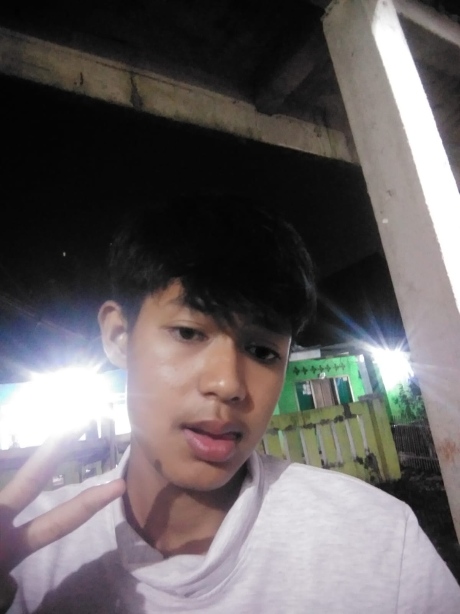

Dan saya adalah seorang Pelajar & Calon Web Developer
Saya adalah seorang Pelajar SMKN 1 Pebayuran jurusan Teknik Komputer dan Jaringan yang memiliki minat besar di dunia Web Development dan Teknologi.
Download CVHalo! Perkenalkan, nama saya Andri Lasmana, seorang siswa dari SMK Negeri 1 Pebayuran, jurusan Teknik Komputer dan Jaringan (TKJ). Saya memiliki ketertarikan yang besar dalam dunia teknologi, khususnya dalam pembuatan website dan desain.
Sebagai seorang pelajar, saya selalu antusias untuk mempelajari hal-hal baru di bidang pemrograman web, mulai dari HTML, CSS, hingga JavaScript. Portofolio ini saya buat sebagai wadah untuk menampilkan hasil karya dan proses belajar saya selama di SMK.
Mampu merancang tampilan website yang sederhana, rapi, dan responsif menggunakan HTML dan CSS.
Read MoreMemahami dasar-dasar jaringan komputer, instalasi, dan troubleshooting jaringan dari jurusan TKJ.
Read MoreMahir mengoperasikan Word, Excel, PowerPoint dan aplikasi desain untuk kebutuhan pelajar.
Read More"Andri Lasmana membuat pelajaran jaringan yang awalnya terlihat rumit jadi sangat mudah dipahami karena banyak praktiknya!"
"Selalu up-to-date dengan perkembangan teknologi dan sangat kooperatif saat diajak berkolaborasi memajukan program keahlian sekolah."